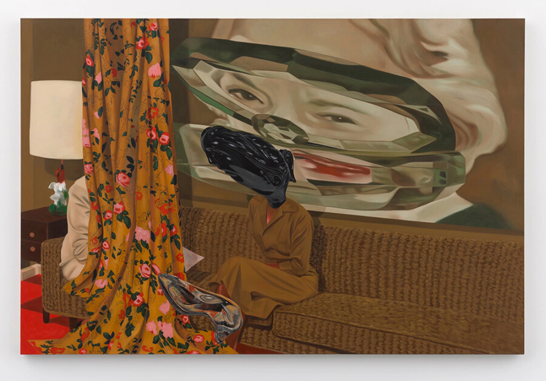

UNREAL
From the multitude of definitions, surrealism readily encapsulates the rejection of rationalism and the embrace of imagination, creating an intriguing baseline. UNREAL draws upon a variety of the machinations that evoke the multiplicities of the original 1920s cultural movement conceived by artist André Breton with his Surrealist Manifesto in 1924 and “officially” ending with Jean Schuster’s provocative manifesto The Fourth Song in 1969. Unofficially, however, the power of imagination has never been for naught; creative freedom has expanded the concept of surrealism beyond a singular artistic movement, instead realizing it as a persistent state of mind.
One hundred years later, the core principles of surrealism still revolve around dreamlike narratives, symbolic iconography, distorted or abstract humor, illusionistic play of materials and mediums, and the stretching of rationality in pursuit of liberation. UNREAL takes a flexible, contemporaneous interpretation of these ideologies while keeping a wary eye on the complexities of current socio-political, conceptual, and philosophical concerns. While the origins of the movement evolved from a combination of the horrors of war alongside the burgeoning field of Sigmund Freud’s analysis of the subconscious, its influence continues to adapt and resonate within contemporary artistic practice today.
The diverse approaches to reality presented in UNREAL foreground a synchronous mode of art-making characteristic of contemporary practices. The works explore themes of fantasy, mystery, history, family, spirituality, identity, and sexuality, situating them within frameworks that initially presume coherence and legibility. However, with varying degrees of opacity and inexplicability, these artworks can destabilize these assumptions, complicating the viewer’s capacity to distinguish between the real and the constructed.
This tension produces a critical space in which reality is not approached as a fixed or stable condition, but as a mediated construct. The exhibition reflects broader ideological shifts in society in which truth claims – understood as assertions upheld by individuals, belief systems, or authoritative texts – are increasingly coming under scrutiny. Instead, we find ourselves in a place where multiple narratives can exist and subjective experiences are validated. By extolling the concept of ambiguity, UNREAL resists singular interpretation and instead foregrounds the instability of meaning itself. In this sense, the exhibition may be understood as an inquiry into the clarity of the image itself as it relates to the limits of representation. Here, reality is not merely depicted but is instead produced, refracted, and reconfigured through aesthetic and discursive practices.
Featured artists:
Esaí Alfredo
Dan Attoe
Ever Baldwin